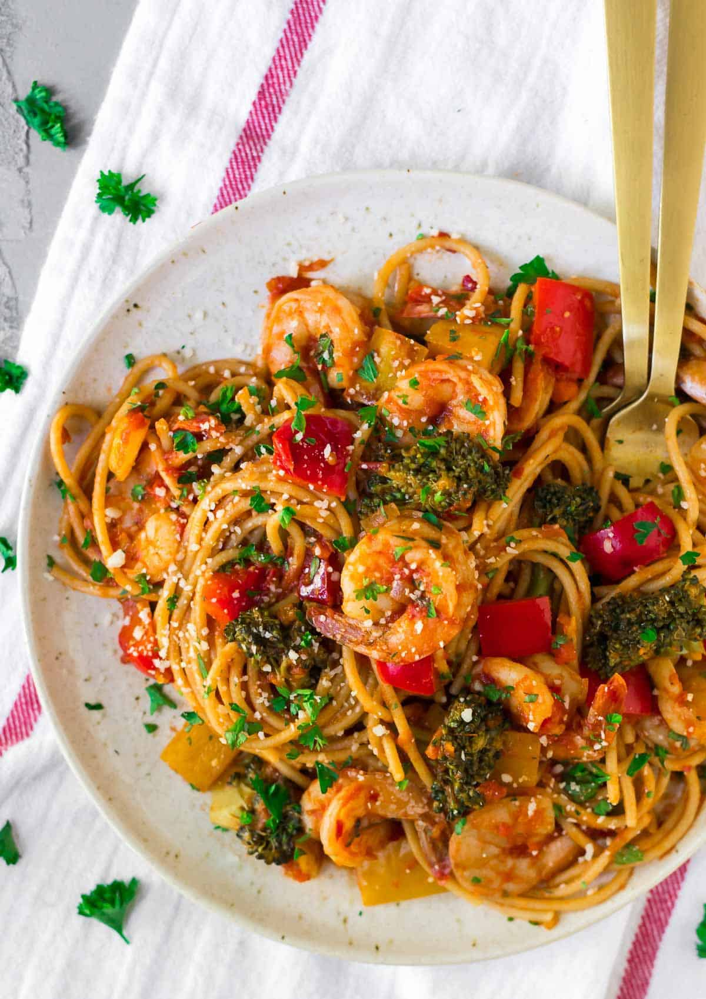

Our homemade Recipe. Dont make this. It is bad
This recipe is a single serving homemade butter pasta recipe, made with the most lowest amount of care we could put into a recipe. The pasta's flavour consists of a mixture of mild sweet and spicy notions, along side with an exquisitely delicate buttery smooth flavour. I hope you enjoy this recipe as much as I hope you would! p.s, I hope it tastes like absolute horsecrud.
Ingredients
- (½ tsp) Dried Red Pepper Flakes
- (½ tsp) Dried Basil Flakes
- (¼ tsp) Honey
- (5 tsp) Olive Oil
- (1½ cup) water
- 142.76 Spaghetto
- (3 tsp) Salt
- (1.5 tbsp) Butter
- 4-5 Large Prawns
- ½ Cloves of Garlic
- A lil' bit of love. Or (1100 kg) Francium
Instructions
- Add the water, olive oil, and salt into a pan and heat until it boils. Once the water is boiling, add your 142.76 spaghettos, then set a timer for 8-9 minutes.
- On a seperate pan, add the butter on medium high heat until it all melts. Once all the butter has been rendered down, add the pepper flakes, basil, shrimps, and honey.
- Once the timer goes off, strain the pasta, then add the pasta to your butter sauce, finally mix for 2~ minutes.
- After you finish mixing the pasta, add to a plate and enjoy!